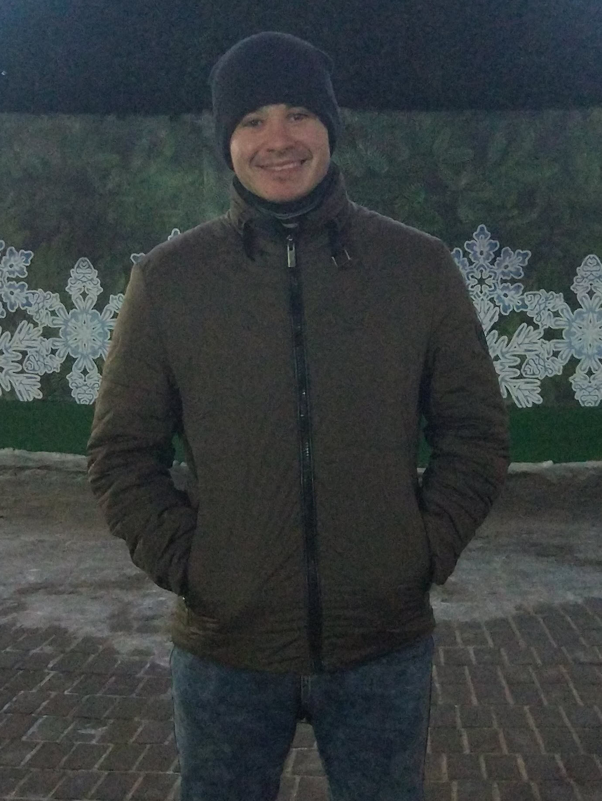

<!DOCTYPE html>
<html lang="ru">
  <head>
    <meta charset="UTF-8" />
    <meta name="viewport" content="width=device-width, initial-scale=1" />
    <title>Resume Zarifullin R.F.</title>
    <link rel="stylesheet" href="./css/style.css?v=0">
    <link href="https://fonts.googleapis.com/css2?family=Montserrat:wght@400;700&display=swap" rel="stylesheet">
  </head>
  <body>

    <!-- main container  --> 
    <div class="wrapper">
      <aside class="sidebar">
        
        
        <!-- contacts container -->
         <div class="contacts">
           <h3 class="contacts-title">Контакты</h3>
            <div>
             <span class="contacts-link-type">C:</span>  
              <a class="contacts-link" href="tel:+79870656090">+7 987 065 60 90</a> 
            </div>
            <div>
             <span class="contacts-link-type">E:</span> 
              <a class="contacts-link" href="mailto:xaero9011@gmail.com">imark.weber@yandex.ru</a> 
          </div>  
      </aside>
 
     <!-- about me container -->
      
      <div class="about-me-container">

        <!-- about me main info -->
        <div>
          <h2 class="lead-engineer">Ведущий инженер-электроник</h2>
          <h1 class="info-name">Ренат Зарифуллин</h1>
        </div>


        <!-- Work Experience -->
        <div>
          <h3 class="work-experience">Опыт работы</h3>
           
          <!-- company 1  -->
          <div>
            <h4 class="lead-engineer">Ведущий инженер-электроник  
              <span class="orange-color">АО "Зеленодольский завод им. А.М. Горького"<span></h4>
              <span class="work-company">Июль 2020 - Декабрь 2021</span> | 
              <span class="work-country">Зеленодольск</span>
           
            <ul>
              <li class="work-text">Обеспечение бесперебойной работы сетевого оборудования, оргтехники на предприятии.</li>
              <li class="work-text">Подключение и обслуживание новой техники и оборудования.</li>
              <li class="work-text">Проведение и обслуживание сети предприятия.</li>
              <li class="work-text">Удалённая работа и частичное администрирование.</li>
              <li class="work-text">Проведение профилактических и ремонтных мероприятий с оборудованием.</li>
            </ul>
          </div>

          <!-- company 2  -->
          <div>
            <h4 class="Master">Инженер-электроник 1 кат.
            <span class="orange-color">АО "Зеленодольский завод им. А.М. Горького"</span></h4>
            <span class="work-company">Февраль 2019 - Июль 2020</span> |
            <span class="work-country">Зеленодольск</span>

            <ul>
              <li class="work-text">Обеспечение бесперебойной работы сетевого оборудования, оргтехники на предприятии.</li>
              <li class="work-text">Подключение и обслуживание новой техники и оборудования.</li>
              <li class="work-text">Проведение и обслуживание сети предприятия.</li>
              <li class="work-text">Проведение профилактических и ремонтных мероприятий с оборудованием.</li>
            </ul>
          </div>
          
          <!-- company 3  -->
          <div>
            <h4 class="Master">Мастер участка
            <span class="orange-color">«Казанский авиационный завод им. С.П. Горбунова-филиал ПАО «Туполев»</span></h4>
            <span class="work-company">Март 2018 - Декабрь 2018</span> | 
            <span class="work-country">Казань</span> 
           
            <ul>
              <li class="work-text">Осуществление руководства участком.</li>
              <li class="work-text">Работа с технической документацией.</li>
              <li class="work-text">Обеспечение всех необходимых условий для рабочих. </li>
              <li class="work-text">Соблюдение техники безопасности. </li>
            </ul>
          </div>

           <!-- company 4  -->
           <div>
            <h4 class="Master">Сменный мастер станочных работ крепёжного участка
            <span class="orange-color">АО "Зеленодольский завод им. А.М. Горького"</span></h4>
            <span class="work-company">Ноябрь 2014 - Октябрь 2017</span> | 
            <span class="work-country">Зеленодольск</span> 
           
            <ul>
              <li class="work-text">Осуществление руководства участком.</li>
              <li class="work-text">Работа с технической документацией.</li>
              <li class="work-text">Обеспечение всех необходимых условий для рабочих. </li>
              <li class="work-text">Соблюдение техники безопасности. </li>
            </ul>
          </div>

          <!-- Education -->
          <div>
            <h3 class="Education">Образование</h3>

            <!-- education 1 -->
            <h4><span class="orange-color">Казанский Национальный Исследовательский Технический Университет им. А.Н. Туполева</span></h4>
            <h4 class="Engineer">Инженер | Технология машиностроения</h4>
            <span class="work-company">Сентябрь 2008 - Июнь 2013</span> | 
            <span class="work-country">Казань</span>
          </div>
        </div>
      </div>

    </div>


  </body>

</html>
